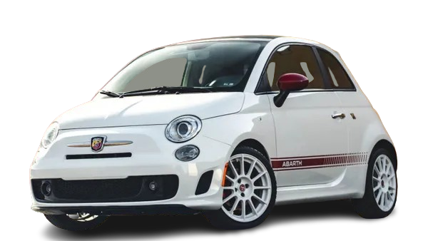
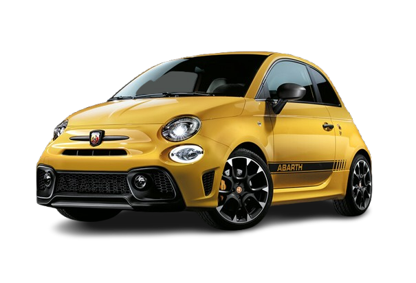
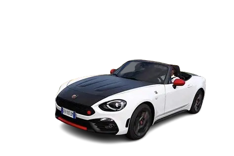

Abarth
Historia de la marca
Abarth es una marca italiana de coches deportivos fundada en 1949 por Carlo Abarth. Desde sus inicios, la empresa se centró en mejorar el rendimiento de vehículos pequeños, especialmente modelos de Fiat, convirtiéndolos en coches más rápidos y deportivos.
Fundador
Carlo Abarth fue un ingeniero y piloto de origen austriaco-italiano. Se hizo famoso por su capacidad para modificar coches y aumentar su potencia, logrando numerosos récords en competición.
Primer coche
Uno de los primeros modelos importantes fue el Abarth 204A, basado en Fiat, que destacó en competiciones deportivas y marcó el inicio del éxito de la marca.
Datos importantes
- Fundación: 1949
- País: Italia
- Especialidad: Coches deportivos compactos
- Relación: Parte del grupo Fiat
Modelos famosos
- Abarth 500
- Abarth 595
- Abarth 124 Spider


